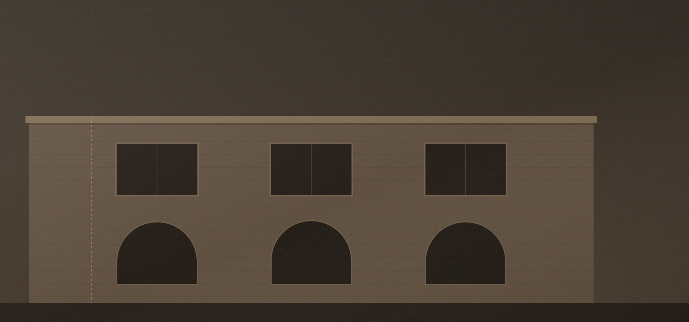

/ 06 — Blog
Yazılar ve araştırmalar
Malzeme, yöntem ve koruma kuramı üzerine notlar; sahada karşılaşılan sorunlara dair araştırma raporları.
İlk yazılar hazırlanıyor.
Malzeme, yöntem ve koruma kuramı üzerine notlar ile saha araştırmaları yakında burada yayımlanacak. Bu arada ofisin katıldığı etkinlikler için haberler sayfasına göz atabilirsiniz.